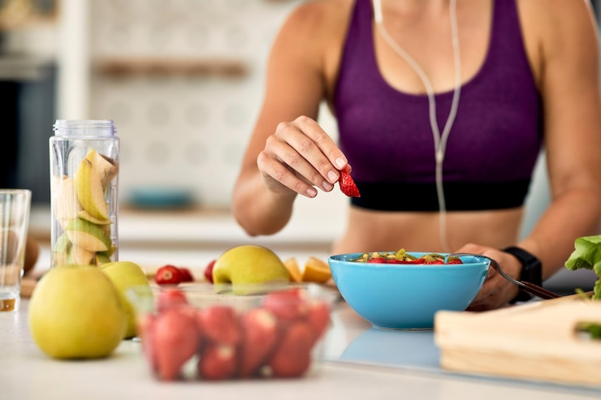
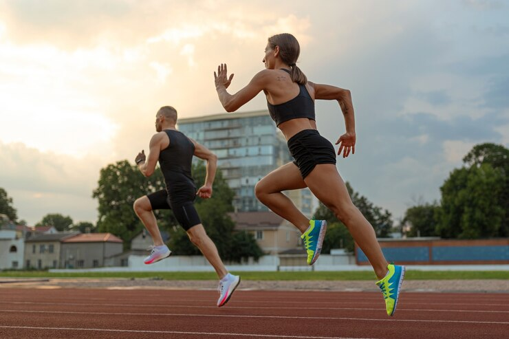

Nutrición Deportiva y Salud
La nutrición es uno de los tres factores que marcan la práctica del deporte; los otros dos son los factores genéticos particulares del atleta y el tipo de entrenamiento realizado. Los alimentos que se incluyen en una dieta deportiva atienden a tres objetivos básicos: proporcionar energía, proporcionar material para el fortalecimiento y reparación de los tejidos, mantener y regular el metabolismo. No existe una dieta general para los deportistas, cada deporte tiene unas demandas especiales y una nutrición específica.
Qué es la nutrición deportiva: definición básica
La nutrición deportiva es el estudio científico de los efectos de los alimentos y bebidas en el rendimiento físico de los y las atletas. Por tanto, es la aplicación de la ciencia nutricional a la mejora del rendimiento deportivo.
El hecho de establecer una disciplina separada, como una especialización de la nutrición en general, responde a las características tan específicas que tiene el deporte en cuanto a desgaste físico, desarrollo muscular, prevención de lesiones, etc.
Y es que poco tienen que ver las necesidades nutricionales de un atleta de élite con las de una persona sedentaria o que, simplemente, practique deporte a nivel amateur.
De este modo, los nutricionistas deportivos:
- Deben saber cómo afecta la dieta al metabolismo de los atletas.
- Estudian cómo el cuerpo procesa los nutrientes para mantener una buena salud y un rendimiento físico óptimo.
- Deben ser capaces de prestar asesoramiento sobre dietas específicas para atletas de alto rendimiento.
En CEMP te ofrecemos el Máster en Nutrición Deportiva para que te inicies en esta disciplina y puedas convertirte en todo un profesional.
Objetivos de la nutrición deportiva
Con carácter general, los principales objetivos de la nutrición deportiva son tres:
- Optimizar el rendimiento del deportista durante sus entrenamientos y en la competición.
- Reducir el riesgo de lesiones, proporcionando una base fisiológica adecuada para la práctica deportiva intensa.
- Acelerar la recuperación después del ejercicio o de la competición.
Por tanto, en cierto modo, podría hacerse un paralelismo entre la nutrición deportiva (respecto de la nutrición en general) y la fisioterapia deportiva (respecto de la fisioterapia general).
Desde luego, es importante recordar que la nutrición deportiva tiene un carácter marcadamente dinámico y personalizado, ya que:
- Debe adaptarse a las características específicas de cada deportista, así como a sus objetivos personales y de competición.
- Ha de variar en función del momento del entrenamiento en que se encuentre el atleta. Así, no serán iguales los requerimientos nutricionales en una fase inicial que en los días previos a la competición o, finalmente, en los días de recuperación.
¿Cuál es el origen de la nutrición deportiva?
Los orígenes de la nutrición deportiva se remontan a los primeros tiempos de la propia práctica deportiva.
Así, se sabe que los atletas de la antigua Grecia y Roma tenían dietas especiales para mejorar su rendimiento de cara a las competiciones deportivas que empezaban a celebrarse en aquella época. De hecho, la palabra «atleta» viene del griego athlos, que significa «competición».
Estos primeros atletas estaban convencidos de que consumir los alimentos adecuados podía ayudarles a entrenar más duro y a ganar competiciones.
De todos modos, para encontrarnos ante una disciplina con fundamento científico real, hay que esperar prácticamente hasta finales del siglo XIX y principios del XX.
En esa época, ya con los juegos olímpicos en plena expansión, se empieza a estudiar más en profundidad la composición de los alimentos y sus efectos a nivel fisiológico. Así, los progresivos avances científicos, unidos a un creciente interés por el deporte, ayudaron a construir la disciplina de la nutrición deportiva, que hoy en día está más en auge que nunca.
¿Cómo dedicarse a esta disciplina?
Una vez que hemos visto qué es la nutrición deportiva, cuáles son sus objetivos y dónde se origina, quizás te interese saber cuál es el camino adecuado para trabajar profesionalmente en este ámbito.
Pues bien, un buen nutricionista deportivo debería:
- Tener un conocimiento científico amplio acerca de la fisiología del cuerpo humano, de la nutrición y de los efectos del ejercicio, entre otros aspectos. Por supuesto, es imprescindible actualizar continuamente los conocimientos adquiridos, para incorporar cualquier descubrimiento o avance que se produzca en este ámbito.
- Ser capaz de crear planes de alimentación 100% personalizados, además de saber modificarlos cuando las circunstancias así lo requieran.
- Es recomendable tener una gran capacidad de trabajo en equipo y buenas dotes de comunicación interpersonal. Al fin y al cabo, como en tantos otros sectores, se trata de trabajar con personas sometidas a altos grados de exigencia física y psicológica.